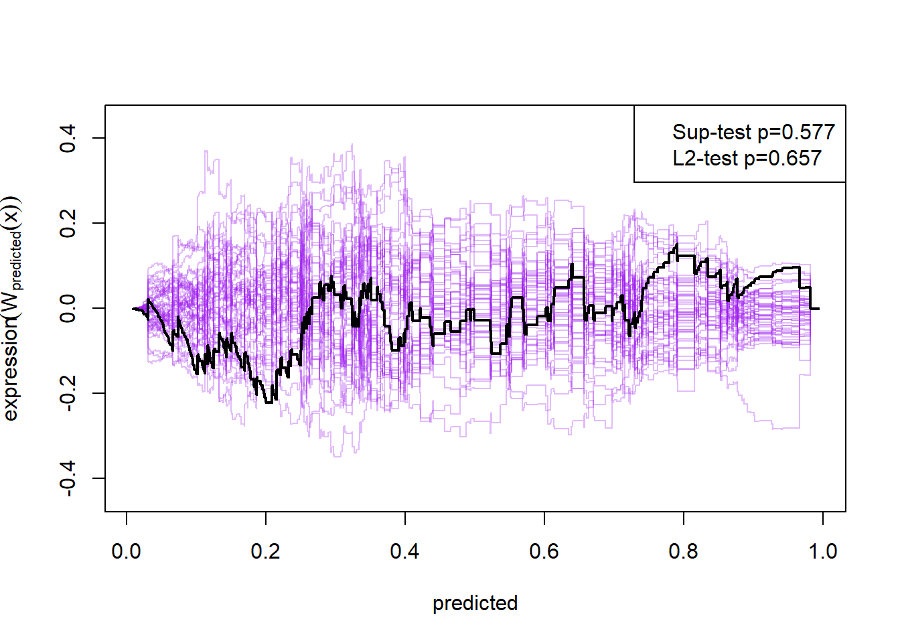

Chapter 1 Binary Regression
# To download the tools needed for model validation run the line of code below
#devtools::install_github("kkholst/gof")library(tidyverse)
library(emmeans)
library(vtable)
library(dobson)
library(gof)
library(mlbench)
library(lattice)1.1 When to use this model?
Binary logistic regression is used when the response variable is binary, for example the response can be in the form yes or no and dead or alive. The explanatory variables can still be continuous or discrete, and there is no limit on the number of explanatory variables.
In the examples in this chapter we will be using the beetle data from the package dobson. Here our explanatory variable is doseage of carbon-disulfide (CS_2) and the response is dead or alive.
1.2 Description of the Model
The binary response is coded as 1 and 0, instead of for example yes or no. This means we can’t just use normal linear regression, as then the response could be outside the range of 0 and 1. This is why we need to make us of the logit link function, and the method is called logistic regression.
In normal linear regression we assume the the response y is in the form \(y=b_0+b_1x_1+...+b_nx_n\), where the x’s are the explanatory variables and \(b_0,...,b_n\) are the parameters we estimate through linear regression. Now in binary linear regression we assume the response y is in the form \(y=\frac{\exp(b_0+b_1x_1+...+b_nx_n)}{1+\exp(b_0+b_1x_1+...+b_nx_n)}\), so we still have the linear combination of the explanatory variables and the response is now between 0 and 1.
The model then outputs the probability of seeing yes or no given the explanatory variables.
The coefficients we get from doing a logistic regression correspond to what we call “log odds”. If we are in a model with one explanatory variable and a response variable, the response is assumed to take the form \(y=\frac{\exp(b_0+b_1x_1)}{1+\exp(b_0+b_1x_1)}\). Here \(b_0+b_1x_1\) corresponds to the log odds which means \(\exp(b_0+b_1x_1)\) is the odds ratio of \(y=1\), and can take values in teh range \([0,\infty)\). This means that \(\exp(b_0+b_1x_1)=\frac{P}{1-P}\) where \(P\) is the probability of success. The odds ratio of 1 is when the probability of success is equal to the probability of failure. The odds ratio of 2 is when the probability of success is twice the probability of failure. The odds ratio of 0.5 is when the probability of failure is twice the probability of success.
1.3 similarities to the chi-squared test
The chi-squared test can also be used for binary data, and it has its advantages and disadvantages mainly: Its simple. It is a very simple and easy test, but the result is also simple. If we just want to know if our observations are significant, the chi-squared test is great´, but it doesn’t really say more than that. In our example with the beetles, we could be interested in knowing if carbon-disulfide can kill the beetles and the different dosages. Here our null-hypothesis would be that it doesnt kill the beetles, and we would probably find through the chi-squared test that we reject this null-hypothesis for most/all dosages. Binary logistic regression can instead find the probability of a beetle to survive given a specific dosage.
1.4 Example 1: Simple example but bad model fit
1.4.1 Organizing data
We load the beetle data from the package dobson, and change the names of the varibles to ones that makes more sense:
#Loading the data
data(beetle)
#Changing names of the variables
names(beetle) <- c("dose", "number", "dead")
#Making new varible
beetle$proportion <- beetle$dead/beetle$numberNow we make a variable table together with a simple linear regression, to get an overview of the data:
Description <- c("Dosage of CS2 in log10(mg/l)","Number of beetles","Number of beetles that died", "Propotion of beetles that is dead")
Use <- c("Explanatory variable", "Response variable", "Response variable", "Response variable")
cbind(vt(beetle, out = "return"),data.frame(Description,Use))## Name Class Values Description Use
## 1 dose numeric Num: 1.691 to 1.884 Dosage of CS2 in log10(mg/l) Explanatory variable
## 2 number numeric Num: 56 to 63 Number of beetles Response variable
## 3 dead numeric Num: 6 to 61 Number of beetles that died Response variable
## 4 proportion numeric Num: 0.102 to 1 Propotion of beetles that is dead Response variableggplot(beetle,aes(x=dose,y=dead/number)) + geom_point() + geom_smooth(method="lm") +
xlab("log10(CS2 mg/l)") + ylab("Proportion of dead beetles") +
theme_light()## `geom_smooth()` using formula = 'y ~ x'Note: If we trust this linear regression blindly we could be inclined to think that given a dosage of 2 log10(CS2 mg/L) we would get a proportion of dead beetles which exceeds 1. This of course doesn’t make sense and is why we need another method than just simple linear regression.
1.4.2 Fitting Model
We fit the model using the glm() function, and as a response variable we use the table:
cbind(beetle$dead,beetle$number-beetle$dead)## [,1] [,2]
## [1,] 6 53
## [2,] 13 47
## [3,] 18 44
## [4,] 28 28
## [5,] 52 11
## [6,] 53 6
## [7,] 61 1
## [8,] 60 0Where the first column is the number of beetles that died and the second is number of beetles still alive, given the dosage of carbon-disulfide.
# Make probit regression
m1 <- glm(cbind(dead,number-dead)~dose,data=beetle,family=binomial(link="logit")) #cbind(dead,number-dead) makes table consisting of 2 columns and 8 rows, with the first column representing number of beetles that died and the second column is how many beetles are alive
summary(m1)##
## Call:
## glm(formula = cbind(dead, number - dead) ~ dose, family = binomial(link = "logit"),
## data = beetle)
##
## Deviance Residuals:
## Min 1Q Median 3Q Max
## -1.5941 -0.3944 0.8329 1.2592 1.5940
##
## Coefficients:
## Estimate Std. Error z value Pr(>|z|)
## (Intercept) -60.717 5.181 -11.72 <2e-16 ***
## dose 34.270 2.912 11.77 <2e-16 ***
## ---
## Signif. codes: 0 '***' 0.001 '**' 0.01 '*' 0.05 '.' 0.1 ' ' 1
##
## (Dispersion parameter for binomial family taken to be 1)
##
## Null deviance: 284.202 on 7 degrees of freedom
## Residual deviance: 11.232 on 6 degrees of freedom
## AIC: 41.43
##
## Number of Fisher Scoring iterations: 4In the summary we can see that the dosage of CS2 i very significant. From the summary we also get the estimates of the coefficients in the logit function, i.e. our model estimates the logit function to be: \(y=\frac{\exp(-60.717+34.27*dose)}{1+\exp(-60.717+34.27*dose)}\), where y is the probability of the beetles dying.
We can then plot the estimated logit function together with the known data:
preds <- data.frame(dose = seq(min(beetle$dose), max(beetle$dose), length.out = 500))
preds$pred <- predict(m1, preds, type = "response")
preds$upper <- predict(m1, preds, type = "response", se.fit = TRUE)$fit + 1.96 * predict(m1, preds, type = "response", se.fit = TRUE)$se.fit
preds$lower <- predict(m1, preds, type = "response", se.fit = TRUE)$fit - 1.96 * predict(m1, preds, type = "response", se.fit = TRUE)$se.fit
ggplot(beetle, aes(x = dose, y = proportion)) +
geom_point(alpha = 0.5) +
geom_line(data = preds, aes(x = dose, y = pred), color = "red", inherit.aes = FALSE) +
geom_ribbon(data = preds, aes(x = dose, ymin = lower, ymax = upper), alpha = 0.2, inherit.aes = FALSE) +
ggtitle("")
1.4.3 Model validering via gof-pakken. Gerne via kkholst på github.
The binary logistic regression model only holds if the following assumptions hold:
- The explanatory variables are independent
- The observations are independent
- The explanatory variables are linearly related to the log odds of the dependent variable
In our example with the beetle data, we only have one explanatory variable so assumption 1 is trivially fulfilled.
To check assumption two we can do a residual plot just like in normal linear regression, although here it is not as usefull. In normal linear regression we check if there is any patterns to the residuals, i.e. if they are randomly distributed, but in binary regression the residuals are expected to have a distinct pattern (this can be seen in the second exmaple further down). Therefore a residual plot in this case is mostly used to spot outliers.
plot(m1, which = 1)This residual plot is impossible to interpret as there is too few data points.
A better way to check assumption two is to simulate the cumulative sum of the residual process, and hold those simulations up against the observed cumulative sum:
plot(cumres(m1))Here the null-hypothesis is that the model is correct, which means that the test suggests that the model is false as the p-value is 0.009-0.011.
1.4.4 Hypothesis test
To do an hypothesis for the binary logistic regression, we use the function drop1() on our fitted model:
drop1(m1, test="Chisq")## Single term deletions
##
## Model:
## cbind(dead, number - dead) ~ dose
## Df Deviance AIC LRT Pr(>Chi)
## <none> 11.232 41.43
## dose 1 284.202 312.40 272.97 < 2.2e-16 ***
## ---
## Signif. codes: 0 '***' 0.001 '**' 0.01 '*' 0.05 '.' 0.1 ' ' 1Here we see our explanatory variable dose is statistically significant and we can therefore reject the null, i.e. this test suggests that dosage of CS2 do impact whether the beetles live or die, under the assumption that the model is true.
1.4.5 Parameter estimates with emmeans.
If we are interested in the estimated mean probability of beetles dying given the mean dosage of carbon-disulfide, we can use the emmeans() function (Note: This is more interesting when we have multiple explanatory variables)
m <- emmeans(m1, ~ dose, test = "F")
m## dose emmean SE df asymp.LCL asymp.UCL
## 1.79 0.744 0.138 Inf 0.474 1.01
##
## Results are given on the logit (not the response) scale.
## Confidence level used: 0.95Here we see that given the mean dosage of carbon-disulfide we expect the beetles to die with a probability of 0.744.
1.5 Example 2: Multiple variables and correct model fit
Now we take a look at another data example containing multiple explanatory variables and a good model fit. The dataset contains characteristics of Pima Indian women who was tested for diabetes.
1.5.1 Organizing data
We first load the data
data(PimaIndiansDiabetes2)
newdata <- na.omit(PimaIndiansDiabetes2)
newdata$age <- as.factor(ifelse(newdata$age<=30,"20-30",ifelse(newdata$age<=40,"31-40",ifelse(newdata$age<=50,"41-50","50+"))))
newdata <- newdata[,c("diabetes","glucose","pressure","triceps","insulin","mass","pedigree","age")]Now we make a variable table, to get an overview of the data:
Description <- c("Diabetic (test for diabetes)","Plasma glucose concentration (glucose tolerance test)", "Diastolic blood pressure (mm Hg)","Triceps skin fold thickness (mm)","2-Hour serum insulin (mu U/ml)","Body mass index","Diabetes pedigree function","Age sorted into buckets")
Use <- c("Response variable", "Explanatory variable", "Explanatory variable", "Explanatory variable","Explanatory variable", "Explanatory variable", "Explanatory variable", "Explanatory variable")
cbind(vt(newdata, out = "return"),data.frame(Description,Use))## Name Class Values Description Use
## 1 diabetes factor 'neg' 'pos' Diabetic (test for diabetes) Response variable
## 2 glucose numeric Num: 56 to 198 Plasma glucose concentration (glucose tolerance test) Explanatory variable
## 3 pressure numeric Num: 24 to 110 Diastolic blood pressure (mm Hg) Explanatory variable
## 4 triceps numeric Num: 7 to 63 Triceps skin fold thickness (mm) Explanatory variable
## 5 insulin numeric Num: 14 to 846 2-Hour serum insulin (mu U/ml) Explanatory variable
## 6 mass numeric Num: 18.2 to 67.1 Body mass index Explanatory variable
## 7 pedigree numeric Num: 0.085 to 2.42 Diabetes pedigree function Explanatory variable
## 8 age factor '20-30' '31-40' '41-50' '50+' Age sorted into buckets Explanatory variableBoxplot for each continuous variable to see a potential effect of each explanatory variable on the response variable.
par(mfrow = c(3,2))
boxplot(glucose~diabetes, ylab="Glucose", xlab= "Diabetes", col="light blue",data = newdata)
boxplot(pressure~diabetes, ylab="Pressure", xlab= "Diabetes", col="light blue",data = newdata)
boxplot(triceps~diabetes, ylab="triceps", xlab= "Diabetes", col="light blue",data = newdata)
boxplot(insulin~diabetes, ylab="Insulin", xlab= "Diabetes", col="light blue",data = newdata)
boxplot(mass~diabetes, ylab="Mass", xlab= "Diabetes", col="light blue",data = newdata)
boxplot(pedigree~diabetes, ylab="Pedigree", xlab= "Diabetes", col="light blue",data = newdata)Number of diabetics and non-diabetics in each age group
xtabs(~diabetes + age, data = newdata)## age
## diabetes 20-30 31-40 41-50 50+
## neg 197 39 18 8
## pos 51 35 24 201.5.2 Fitting Model
Now we fit the model using all the explanatory variables.
m2 <- glm(diabetes~., family = binomial(link="logit"),data = newdata)
summary(m2)##
## Call:
## glm(formula = diabetes ~ ., family = binomial(link = "logit"),
## data = newdata)
##
## Deviance Residuals:
## Min 1Q Median 3Q Max
## -2.8441 -0.6426 -0.3532 0.6234 2.6374
##
## Coefficients:
## Estimate Std. Error z value Pr(>|z|)
## (Intercept) -8.9635885 1.1684253 -7.672 1.70e-14 ***
## glucose 0.0392724 0.0058950 6.662 2.70e-11 ***
## pressure -0.0033196 0.0119070 -0.279 0.7804
## triceps 0.0135295 0.0173730 0.779 0.4361
## insulin -0.0008253 0.0013453 -0.613 0.5396
## mass 0.0645484 0.0272131 2.372 0.0177 *
## pedigree 1.0418192 0.4340281 2.400 0.0164 *
## age31-40 0.7771402 0.3435619 2.262 0.0237 *
## age41-50 1.6377941 0.4134147 3.962 7.44e-05 ***
## age50+ 1.3721989 0.5508856 2.491 0.0127 *
## ---
## Signif. codes: 0 '***' 0.001 '**' 0.01 '*' 0.05 '.' 0.1 ' ' 1
##
## (Dispersion parameter for binomial family taken to be 1)
##
## Null deviance: 498.10 on 391 degrees of freedom
## Residual deviance: 340.36 on 382 degrees of freedom
## AIC: 360.36
##
## Number of Fisher Scoring iterations: 5For every one unit increase in glucose, the log odds of being diabetic ‘pos’(versus being diabetic ‘neg’) increases by 0.039.
Similarly, for one unit increase in pressure, the log odds of being diabetic ‘pos’(versus being diabetic ‘neg’) decreases by 0.0045.
1.5.3 Model validering via gof-pakken. Gerne via kkholst på github.
The binary logistic regression model only holds if the following assumptions hold:
- The explanatory variables are independent
- The observations are independent
- The explanatory variables are linearly related to the log odds of the dependent variable
To get an idea if the explanatory variables are independent we calculate the Spearman correlation matrix
cp <- cor(data.matrix(newdata[,-1]), method = "spearman")
ord <- rev(hclust(as.dist(1-abs(cp)))$order)
colPal <- colorRampPalette(c("blue", "yellow"), space = "rgb")(100)
levelplot(cp[ord, ord],
xlab = "",
ylab = "",
col.regions = colPal,
at = seq(-1,1, length.out = 100),
colorkey = list(space = "top", labels = list(cex = 1.5)),
scales = list(x = list(rot= 45),
y = list(draw = FALSE),
cex = 1.2)
)Here we see that insulin and glucose as well as mass and triceps are heavily correlated, and we could think about removing some of them. This will however not be done here
To check assumption 2, we again make a residual plot:
plot(m2, 1)Here we can see that the residuals clearly have a pattern, and we can see that there are a couple of outliers, but it is hard to say anything about whether or not the observations are independent.
To check this we again simulate the cumulative sum of the residual process:
plot(cumres(m2))
Here the null-hypothesis is that the model is correct, which means that the test suggests that the model is correct as the p-value is 0.596-0.68. Looking at the p-values for the individual variables it also looks really good except for mass and insulin.
1.5.4 Hypothesis test
To do an hypothesis for the binary logistic regression, we use the function drop1() on our fitted model:
drop1(m2, test="Chisq")## Single term deletions
##
## Model:
## diabetes ~ glucose + pressure + triceps + insulin + mass + pedigree +
## age
## Df Deviance AIC LRT Pr(>Chi)
## <none> 340.36 360.36
## glucose 1 394.42 412.42 54.062 1.942e-13 ***
## pressure 1 340.43 358.43 0.078 0.7806971
## triceps 1 340.96 358.96 0.605 0.4365108
## insulin 1 340.73 358.73 0.374 0.5405949
## mass 1 346.11 364.11 5.755 0.0164406 *
## pedigree 1 346.43 364.43 6.071 0.0137413 *
## age 3 360.41 374.41 20.050 0.0001657 ***
## ---
## Signif. codes: 0 '***' 0.001 '**' 0.01 '*' 0.05 '.' 0.1 ' ' 1Here we see that glucose, mass, pedigree and age are statistical significant, while pressure, triceps and insulin are not.